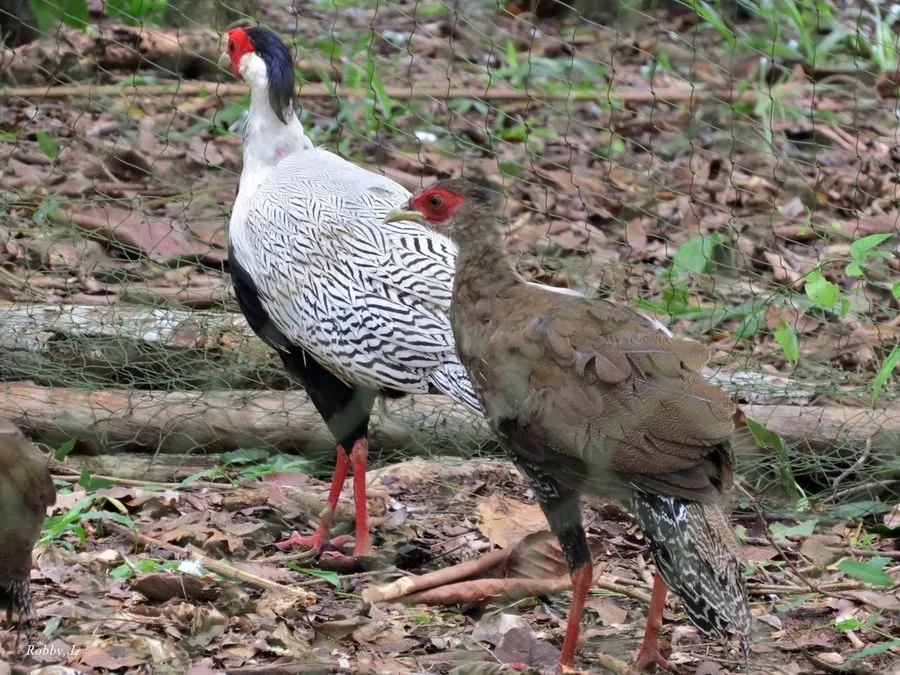

鸟类 · 动物界
白鹇 Lophura nycthemera

中国南方的优雅雉类，雄鸟上体雪白、下体墨黑，尾羽修长如丝带，常被文人比作“林中的白凤凰”。
- 分类
- 门脊索动物门纲鸟纲目鸡形目科雉科属鹇属
- 栖息环境
- 海拔 200–1800 米的常绿阔叶林、竹林和林下灌丛，多在晨昏活动
- 地理分布
- 中国南方及中南半岛，浙江、福建、江西、湖南、广东、广西、云南、贵州等地有分布
- 保护级别
- IUCN 无危（LC）；中国国家二级保护动物
物种志
白鹇雄鸟体长 100–120 cm，体重 1.5–2 kg，尾羽很长。它的上体、头顶和尾羽为纯白色，密布细密的黑色“V”形纹路，下体墨黑色，脸部裸露皮肤鲜红，头顶有黑色长羽冠，喙淡黄绿色，脚红色。雌鸟体长 60–70 cm，通体橄榄褐色并带黑斑，羽色低调。
白鹇分布于中国南方及中南半岛，中国浙江、福建、江西、湖南、广东、广西、云南、贵州等地都有分布，栖息在海拔 200–1800 米的常绿阔叶林、竹林和林下灌丛。它们以植物嫩叶、果实、种子和昆虫为食，多在晨昏活动，受惊时快速奔跑或短距离滑翔。繁殖期雄鸟会展开白色羽衣围绕雌鸟炫耀，每窝产卵 4–6 枚，孵化约 26–27 天。白鹇在中国被列为国家二级保护动物，也是广东省的省鸟。
形态与习性
- 食性植物嫩叶、果实、种子和昆虫
- 体长雄鸟 100–120 cm，雌鸟 60–70 cm
- 体重雄鸟 1.5–2 kg
- 繁殖每窝 4–6 枚卵，孵化约 26–27 天
- 寿命野外约 10–15 年
- 羽色雄鸟上体雪白、下体墨黑，脸部裸皮鲜红
- 文化地位广东省省鸟，常见于传统绘画与刺绣
趣味知识
- 白鹇雄鸟上体雪白、下体墨黑，尾羽修长，姿态十分优雅。
- 它是广东省的省鸟，也常出现在中国传统的绘画和刺绣中。
- 白鹇生性机警，受惊时会快速奔跑或从高处滑翔而下。
- 雄鸟头上有黑色的长羽冠，脸部裸皮鲜红。